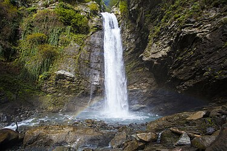

get to know georgia
ლაგოდეხის სახელმწიფო ნაკრძალი — სახელმწიფო ნაკრძალი საქართველოში, ლაგოდეხის მუნიციპალიტეტში. მდებარეობს კავკასიონის მთავარი ქედის სამხრეთ კალთებზე — პირველი ბუნების ნაკრძალი საქართველოში. მისი შექმნა დაკავშირებულია პოლონელი ნატურალისტის ლუდვიკ მლოკოსევიჩის (1831–1909) სახელთან. 1889 წელს მან რუსეთის საიმპერატორო მეცნიერებათა აკადემიის წინაშე პირველად დასვა საკითხი ლაგოდეხის ხეობის ნაკრძალად გამოცხადების შესახებ. 1912 წელს, მისი გარდაცვალებიდან სამი წლის შემდეგ რუსეთის საიმპერატორო გეოგრაფიული საზოგადოების წარდგინებითა და რუსეთის საიმპერატორო მეცნიერებათა აკადემიის შუამდგომლობით, ლაგოდეხის ხეობა ოფიციალურად გამოცხადდა ნაკრძალად.[1]
უჭირავს 19 755 ჰა,[2] აქედან ტყით დაფარულია 12 346 ჰა (72 %), დანარჩენი ალპური საძოვრებია. ზღვის დონიდან სიმაღლეების დიდი ამპლიტუდა (450-3500 მ), მკვეთრად დასერილი რელიეფი, სხვადასხვა დაქანებისა და ექსპოზიციის ფერდობები, ღრმა ხევები მდინარეებით ძლიერ განსხვავებულ და რთულ ბუნებრივ ფიზიკურ-გეოგრაფიულ პირობებს ქმნის, რაც განაპირობებს მცენარეული საფრის მრავალფეროვნებას. აქ მკვეთრადაა გამოსახული ტყის სარტყელი (ზღვის დონიდან 450-2300 მ-მდე) ქართული მუხის მუხნარებით და აღმოსავლური წიფლის წიფლნარებით და ალპური სარტყელი (ზღვის დონიდან 2300-3500 მ) მდელოებით, „ხალებით“ და დეკიანებით. ამ სარტყლებს შორის განლაგებულია სუბალპური მეჩხერი (მაღალმთის მუხისა და ბოკვის) და ტანბრეცილი (არყის) ტყეების სარტყელი (ზღვის დონიდან 1700-2300 მ). ალპური სარტყლის მაღლა სუბნივალური სარტყელია (ზღვის დონიდან 3000 მ) ძლიერ მეჩხერი ბალახნარით.
ლაგოდეხის სახელმწიფო ნაკრძალი მდებარეობს კავკასიონის მთავარი წყალგამყოფი ქედის სამხრეთ ფერდობზე. ნაკრძალი მოიცავს მდინარეების: მაწიმისხევის, ლაგოდეხისხევის, შრომისხევისა და ბაისუბნის აუზებს. მისი ჩრდილოეთი საზღვარი ემთხვევა საქართველოს სახელმწიფო საზღვარს რუსეთის ფედერაციასთან (დაღესტანთან). ნაკრძალს აღმოსავლეთიდან ესაზღვრება მდ. მაწიმისხევი, რომელიც წარმოადგენს საქართველოს სახელმწიფო საზღვარს აზერბაიჯანთან, სამხრეთიდან – განსახლების სისტემა, დასავლეთიდან კი – ბაისუბნის ქედი.[2]
საქართველოში გავრცელებულ მცენარეთა სახეობების თითქმის 2/3 ნაკრძალშია თავმოყრილი. ხსენებულ ზაფხულმწვანე ჯიშების გარდა აქ ტყეებს ქმნის კავკასიური რცხილა, კავკასიური ცაცხვი, მინდვრის ნეკერჩხალი, დათვის თხილი, იფანი, მურყანი, წაბლი და სხვა. ქვეტყეში გვხვდება ჯონჯოლი, მოცვი, შინდი, შინდანწლა, ასკილი, უცვეთლა, ლიანებიდან — გარეული ვაზი, ეკალღიჭი, კატაბარდა, პასტუხოვის სურო და სხვა. კლიმატის სუბტროპიკული ხასიათის გამო ამ კუთხეში შემორჩა კოლხეთისა და ტალიშის მცენარეულობის ელემენტები: ლაფანი, კაკლის ხე, წაბლი, დიდი ბოკვი, პასტუხოვის სურო. ნაკრძალში ყვავილოვან მცენარეთა 1500-მდე სახეობაა, იგი, მდიდარია ენდემური სახეობებით (იულიას ფურისულა, მლოკოსევიჩის იორდასალამი, ლაგოდეხის ნაღველა და სხვა). ნაკრძალში აღრიცხულია 42 სახეობის ძუძუმწოვარი ცხოველი. აქ ჯოგებად გვხვდება აღმოსავლეთკავკასიური ჯიხვი, ბევრია კავკასიური არჩვი, კავკასიური კეთილშობილი ირემი, ევროპული შველი, კავკასიური მურა დათვი, კავკასიური ფოცხვერი, გარეული ღორი, თეთრგულა და ყვითელგულა კვერნა, ამიერკავკასიური მაჩვი, კავკასიური ტყის კატა და სხვა.
ფრინველებიდან (აღრიცხულია მათი 120 სახეობა) აღსანიშნავია კავკასიური როჭო და შურთხი, დიდტანიანი მტაცებელი ფრინველები და მრავალი სახის მგალობელი ფრინველი, რეგისტრირებულია აგრეთვე ამფიბიის 4 და ქვეწარმავლების 8 სახეობა. ნაკრძალში მოწყობილია ფლორისა და ფაუნის მუზეუმი, მაღალმთის მეტეოროლოგიური სადგური. ლაგოდეხის სახელმწიფო ნაკრძალი დაჯილდოებულია „საპატიო ნიშნის“ ორდენით (1972).
ლაგოდეხის დაცული ტერიტორიების სისტემისათვის დამახასიათებელია ნოტიო სუბტროპიკული კლიმატი. თუმცა, სიმაღლეთა შორის მნიშვნელოვანი სხვაობიდან გამომდინარე, ლოკალური კლიმატური პირობების მკვეთრი სხვადასხვაობით ხასიათდება. შედარებით მაღალ სიმაღლეზე კლიმატი ზომიერად ტენიანია, ხასიათდება ცივი ზამთრითა და ხანგრძლივი, მაგრამ გრილი ზაფხულით. დაცული ტერიტორიების ქვედა ზონებში აღინიშნება შედარებით რბილი კლიმატი ნაკლებად ცივი ზამთრითა და ხანგრძლივი ცხელი ზაფხულით. ლაგოდეხის დაცული ტერიტორიების უდაბლეს და უმაღლეს წერტილებს შორის სიმაღლე ზღვის დონიდან 400-დან 3 500 მ-მდე მერყეობს, რაც ნალექების ოდენობასა და საშუალო წლიურ ტემპერატურას შორის მნიშვნელოვან განსხვავებებს განაპირობებს. ადგილობრივი კლიმატური პირობებიდან ქვედა ზონებისათვის დამახასიათებელია შედარებით ტენიანი, ნაკლებად ცივი და შედარებით ცივი ზამთარი და ხანგრძლივი ცხელი ზაფხული, ხოლო ალპურ ზონებში კლიმატი ზომიერად ტენიანია ცივი ზამთრითა და ხანგრძლივი, მაგრამ გრილი ზაფხულით. ქ.ლაგოდეხისა და დაცული ტერიტორიების ქვედა ზონაში ნალექების საშუალო წლიური რაოდენობა დაახლოებით 1 100 მმ-ია და სიმაღლის ცვლასთან ერთად იზრდება, ხოლო დაცული ტერიტორიების უმაღლეს წერტილში 2 000-2 200 მმ-საც აღწევს. ნალექების მაქსიმალური რაოდენობა აპრილიდან სექტემბრამდე პერიოდში მოდის, ხოლო მინიმალური – დეკემბერ-იანვარში. წელიწადში საშუალოდ 135-მდე წვიმიანი დღეა. თოვლის სტაბილური საფარი მაღალ ზონებში ნოემბრიდან შეინიშნება და მაისამდე დევს (წელიწადში დაახლოებით 160 დღის განმავლობაში). ქ. ლაგოდეხში საშუალო წლიური ტემპერატურა 12–13°C ფარგლებში მერყეობს, ხოლო 3 500 მ.ზღ.დ - 0.3-3.2°C. ტემპერატურის აბსოლუტური მაქსიმუმი ზაფხულში 38°C-ია, ხოლო აბსოლუტური მინიმუმი ზამთარში – 23°C.